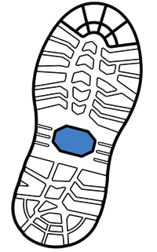

Step
Quiz
Matemàtiques
Activar la resolució pas a pas
ESO
Batxillerat
ESO
Activitat
Dificultat
1
2
3
Sessió fixa
— Aleatòria —
A
B
C
Dimensió
Totes
2: figures al pla
3: cossos a l'espai
Nivell
Fàcil (arrossegar)
Difícil (escriure)
Esvaïment
No
Sí, amb un exemple sencer
Sí, l'alumne fa l'últim pas
Sí, l'alumne fa els 2 últims
Sí, l'alumne fa els 3 últims
Modalitat
Resultat final
Pas a pas
Sessions
1
2
3
4
5
Preguntes
1
2
3
4
5
6
7
8
9
10
Errors màx.
1
2
3
4
5
6
7
8
Criteri
Nota màxima
Nota mitjana
Copia
Ajuda
Obre
Enllaç:
Batxillerat
Activitat
Sessió fixa
— Aleatòria —
A
B
C
Copia
Ajuda
Obre
Enllaç:
CB
📒